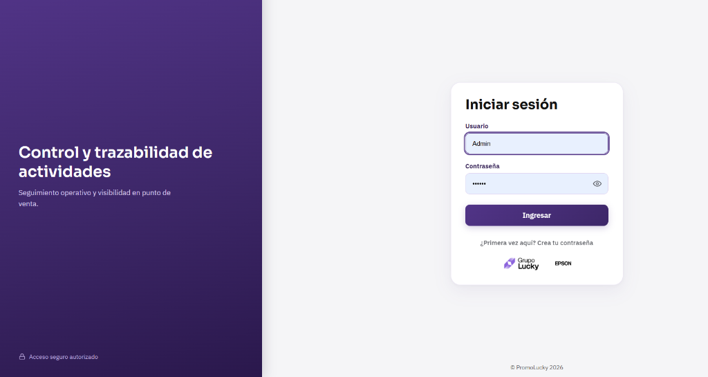
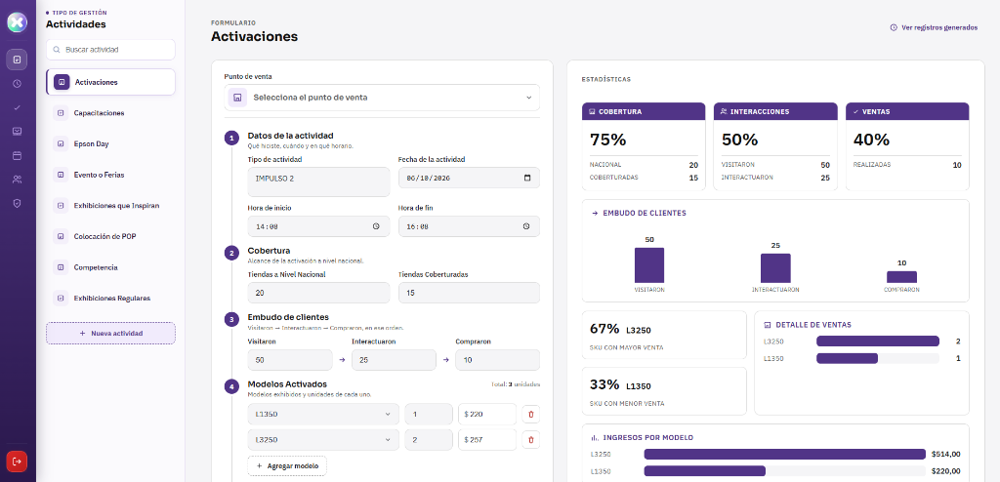
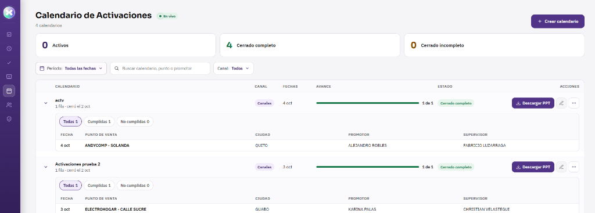

EpsonReport
De las fotos sueltas al reporte oficial: promotores, supervisores y Epson en una sola plataforma, con la presentación lista en un clic.
Cómo se reportaba el trabajo de campo antes
Fotos por Chat, sin Orden
Las fotos del día llegaban sueltas y había que ordenarlas por actividad, fecha y punto de venta antes de armar cada reporte.
Un Formato por Cada Reporte
Activaciones, capacitaciones, POP, ferias y exhibiciones tienen cada una su formato; son entre 12 y 20 reportes cada mes.
Presentaciones Armadas a Mano
Cada entrega a Epson exigía armar el PowerPoint con fotos, cifras y cumplimiento, diapositiva por diapositiva.
Cumplimiento Difícil de Comprobar
Era complejo verificar que cada actividad programada por el supervisor realmente se hizo.
Información Dispersa
Fotos, estadísticas y programación de actividades vivían en lugares distintos.
Con EpsonReport
El promotor registra y sube sus fotos desde el celular, el supervisor aprueba y la presentación oficial de Epson se genera sola.
Ingreso Seguro para el Equipo
Acceso para Promotores y Supervisores
Cada promotor y supervisor entra con su propio usuario y ve solo lo que le corresponde.
Seguimiento de Actividades
Cada registro queda con su responsable, su fecha y su punto de venta.

Llenado Fácil y Datos en Vivo
Carga Rápida desde la Tienda
El promotor completa 4 pasos claros (Datos de la actividad, Cobertura, Embudo de clientes y Modelos), sube sus fotos y envía.
Resultados al Instante
Mientras llena, la pantalla calcula cobertura, interacciones, ventas por modelo e ingresos, sin usar Excel.

Programación, Seguimiento y Descarga de PPT
Control de Tiendas y Promotores
El supervisor programa el calendario de activaciones por punto de venta y promotor, y ve cuántas se cumplieron y cuáles faltan.
Descargar Presentación Lista
Al cerrar el calendario, el sistema arma la presentación de PowerPoint con el formato oficial de Epson, con fotos y cifras.

Menos Trabajo para Lucky, Reportes Listos para Epson
EpsonReport reúne en un solo lugar el registro, la aprobación y la presentación de cada actividad de campo.
Activaciones, Capacitaciones, Epson Day, Ferias, Exhibiciones, POP y Competencia, cada una con su formato.
El archivo oficial se descarga armado con las fotos y los datos del reporte.
Supervisores y administradores ven los avances y los registros nuevos sin recargar la página.